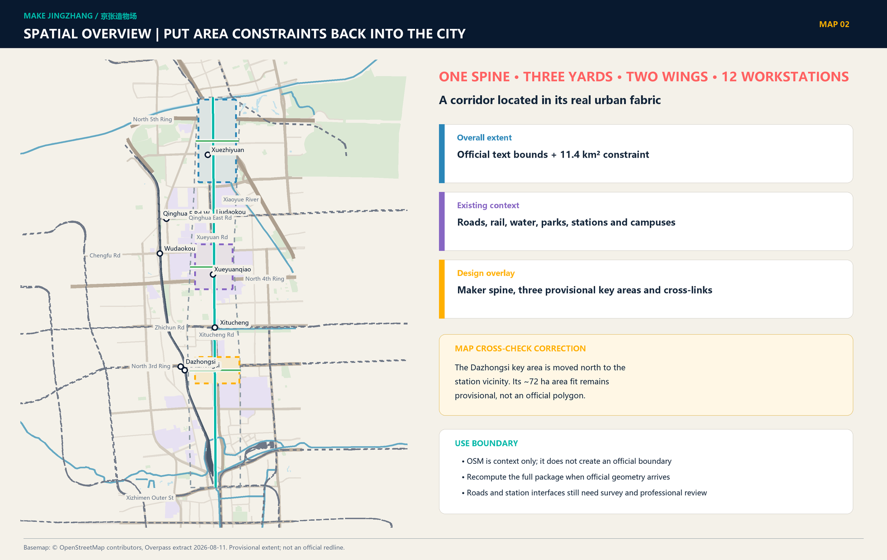
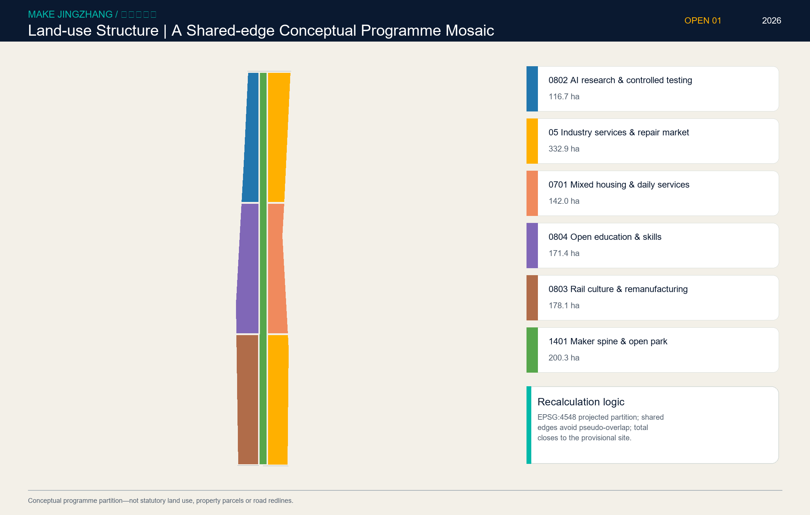
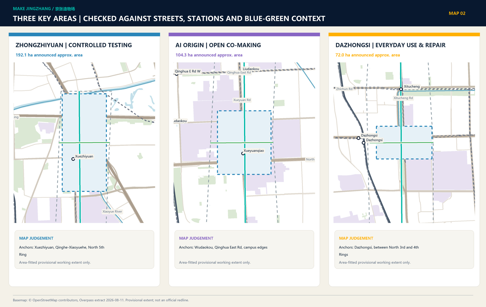
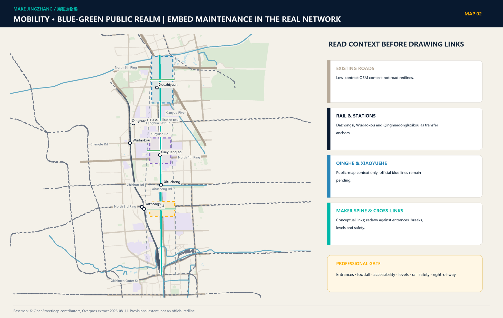
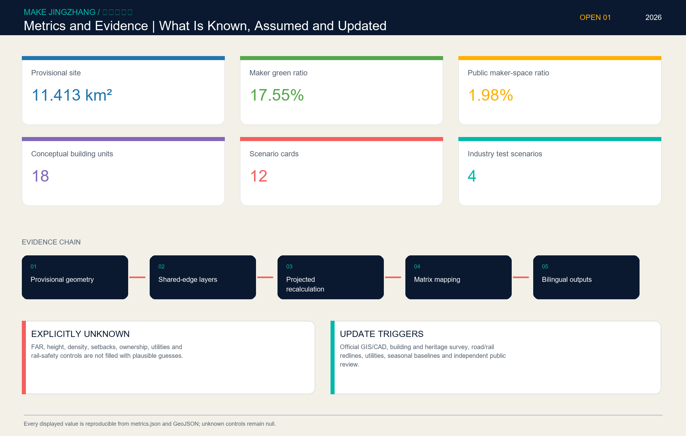

MAKE JINGZHANG / 京张造物场
Turn the making, testing, use, repair and retirement of civic AI devices into a visible, participatory and accountable urban innovation chain.
01
Place one maker spine, three maker yards and two service wings back into roads, rail, water, parks and stations.

02
A shared-edge concept, not statutory zoning.

03
Test at Zhongzhiyuan, co-make at AI Origin and repair at Dazhongsi; map cross-checking corrected the former Dazhongsi mislocation.

04
Make maintenance routes reviewable against actual roads, stations and blue-green context.

05
Known values are reproducible; unknowns stay null.
